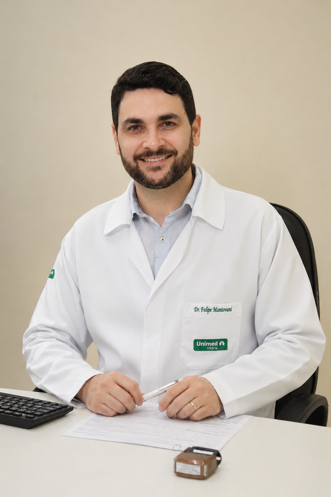

Neuropatia compressiva
Síndrome do túnel do carpo
Abordagem clínica, eletrofisiológica e cirúrgica para desvendar a compressão do nervo mediano e recuperar sensibilidade.
Cirurgia da Mão | Ortopedia e Traumatologia
Diagnóstico preciso e plano de tratamento individualizado, acompanhamento próximo para sua maior segurança e resultado.
Condutas direcionadas para restaurar função, sensibilidade e precisão dos movimentos da mão.

Sobre o médico
O movimento é a base da autonomia e da qualidade de vida. Meu trabalho é devolver segurança para as atividades do dia a dia, tratando desde lesões agudas até condições crônicas que afetam as mãos.
Minha atuação é dedicada à Cirurgia e Tratamento da Mão, uma área que exige precisão, experiência e olhar detalhado. As mãos estão presentes em praticamente tudo o que fazemos trabalhar, cuidar, criar, viver e meu propósito é restaurar a funcionalidade, aliviar a dor e devolver a confiança de quem enfrenta limitações nessa região tão essencial.
No consultório, a consulta vai além do diagnóstico. Investigo a origem do problema, compreendo os objetivos de cada paciente e desenvolvo um plano de tratamento individualizado, unindo técnica, tecnologia e escuta atenta para que você recupere seus movimentos com segurança e qualidade de vida.
Credenciais e Formação
Especialidades
Atendo afecções complexas da mão e punho com enfoque em diagnóstico minucioso, técnicas cirúrgicas precisas e reabilitação coordenada para preservar a função.
Abordagem clínica, eletrofisiológica e cirúrgica para desvendar a compressão do nervo mediano e recuperar sensibilidade.
Liberação do túnel tecidual e reforço do mecanismo extensor, com foco em retorno ambulatorial rápido.
Controle de inflamação dos tendões, com injeções guiadas e imobilizações funcionais para recobrar movimento sem rigidez.
Exames de imagem e biópsia direcionada para tumores benignos e cistos, com excisão segura preservando estruturas neurovasculares.
Redução precisa, estabilização e planejamento de reabilitação para garantir consolidação sem perda da amplitude de movimento.
Cirurgias de descompressão, reparo ligamentar e cuidados reabilitativos integrados para minimizar sequelas e preservar circulação.
Metodologia
Um processo estruturado que une rigor técnico e um olhar humano para garantir que você retome sua rotina com o máximo de funcionalidade.
Entendemos não apenas a dor, mas como ela impacta seu trabalho, seus hobbies e sua autonomia diária.
Exame físico detalhado e análise criteriosa de exames para identificar a origem exata do problema.
Definição do melhor caminho, seja ele conservador ou cirúrgico, focado em devolver força e movimento.
Acompanhamento próximo em cada fase da reabilitação para garantir resultados duradouros e previsíveis.
Atendimento presencial em Santa Teresa, Serra e Aracruz no Espirito Santo.
Contato
Escolha a unidade mais próxima e use o contato direto de agendamento de cada local.
Centro de Especialidades Médicas
Av. das Acácias, 417 - Jardim da Montanha, Santa Teresa - ES, 29650-000
Ver no mapaRua Anita, 39 - Eco, Santa Teresa - ES, 29650-000
Santa Teresa - ES
Ver no mapaAv. Eldes Scherrer Souza, 1497-1519 - Civit II, Serra - ES, 29168-060
Serra - ES
Ver no mapaSomente convenio próprio.
Agendamento direto no aplicativo do plano ou na recepcao da clinica.
Para duvidas gerais ou ajuda para escolher a unidade, fale direto com o secretario no WhatsApp.